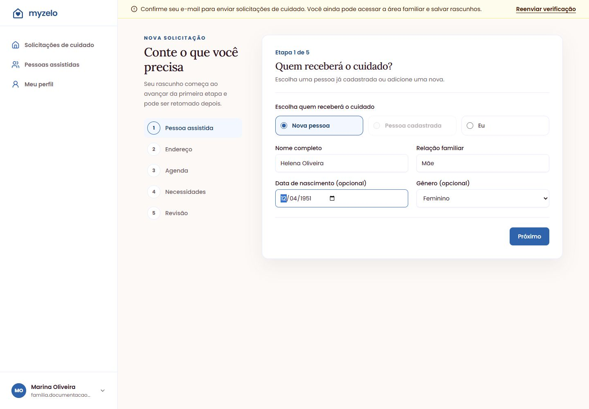
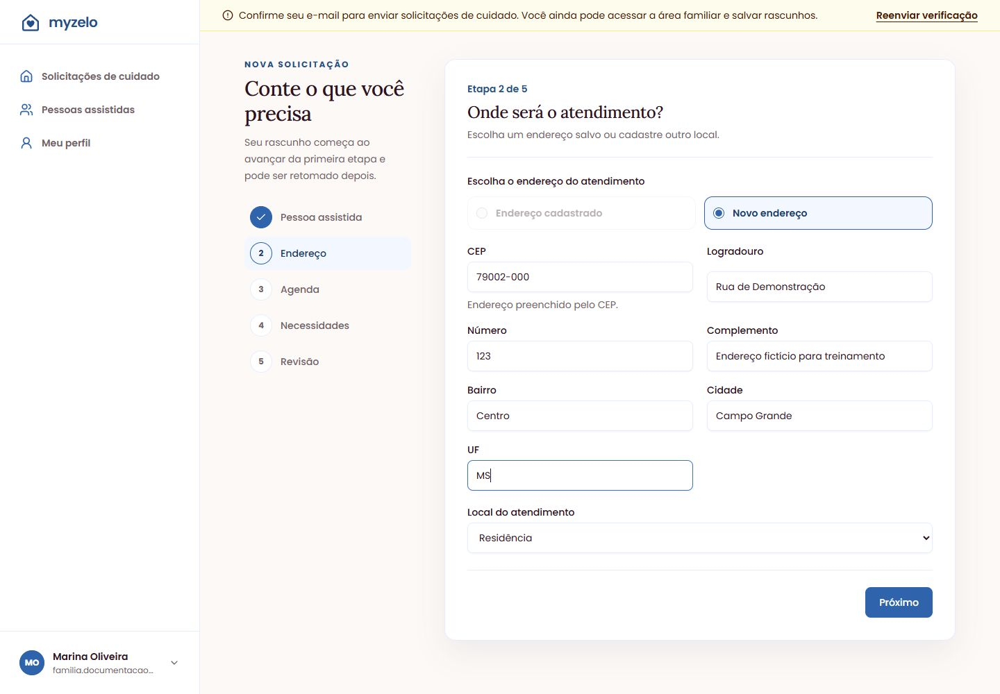
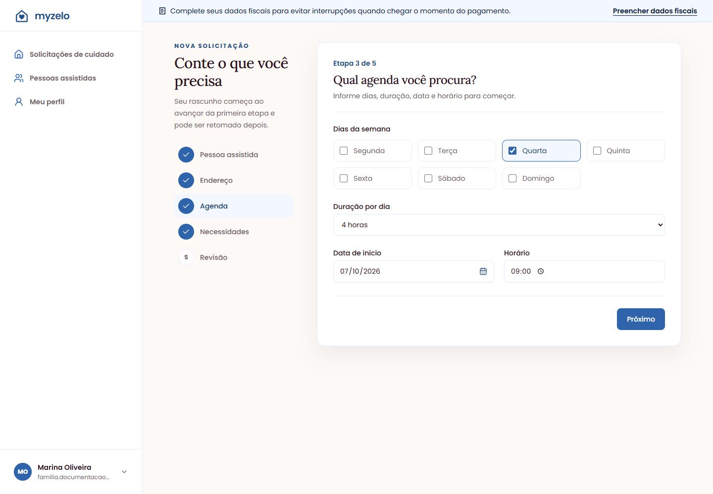
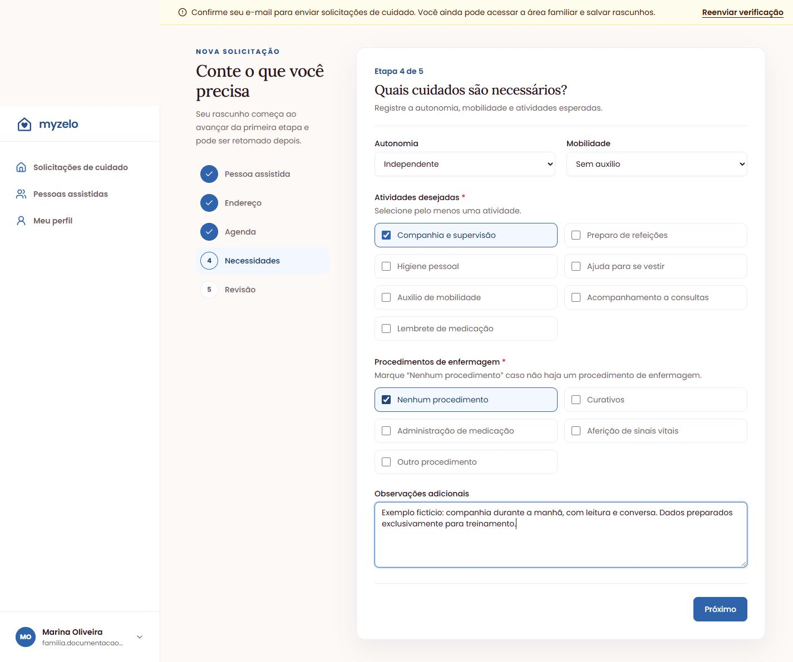
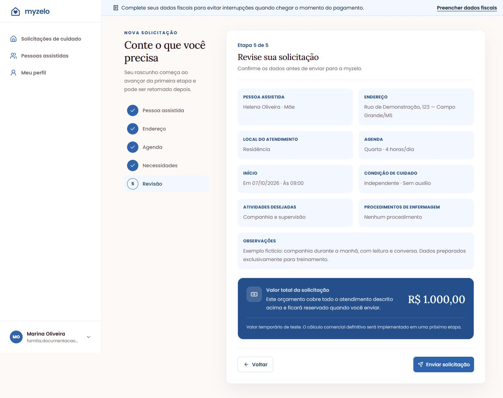

Solicitar cuidado
Solicitar cuidado em cinco etapas
Descreva quem precisa de cuidado, o local, a agenda e as necessidades antes de enviar.
1. Pessoa assistida
- Clique em Nova solicitação. Abrir a tela ainda não cria um rascunho.
- Em Quem receberá o cuidado?, escolha Nova pessoa, Pessoa cadastrada ou Eu.
- Para Nova pessoa, preencha Nome completo e Relação familiar. Data de nascimento e gênero são opcionais. Para Pessoa cadastrada, selecione o cadastro desejado.
- Clique em Próximo. A partir daqui, o rascunho existe e poderá ser retomado.


2. Endereço
- Escolha um endereço cadastrado ou Novo endereço.
- Confira CEP, Logradouro, Número, Complemento, Bairro, Cidade e UF.
- Selecione Local do atendimento e clique em Próximo.


3. Agenda
- Marque pelo menos um dos Dias da semana.
- Selecione Duração por dia: 4, 6, 8, 12 ou 24 horas.
- Informe Data de início e Horário. A data não pode ser anterior ao dia atual.
- Clique em Próximo. Se a página indicar um erro, corrija-o antes de continuar.


4. Necessidades
- Selecione Autonomia: Independente, Assistência parcial ou Dependência total.
- Escolha a Mobilidade que representa a situação da pessoa.
- Marque pelo menos uma das Atividades desejadas.
- Em Procedimentos de enfermagem, escolha os procedimentos necessários ou Nenhum procedimento. Se selecionar Outro procedimento, descreva-o no campo apresentado.
- Use Observações adicionais para complementar a rotina. Clique em Próximo.


5. Revisão e envio
- Em Revise sua solicitação, confira pessoa, endereço, agenda, início, condições de cuidado, atividades, procedimentos e observações.
- Confira Valor total da solicitação. Na versão documentada, ele é um valor temporário de teste.
- Para corrigir informações, clique no nome de uma etapa anterior, altere os campos e salve com Próximo. Depois retorne à revisão.
- Se o e-mail estiver pendente, confirme-o antes de continuar.
- Clique em Enviar solicitação. A tela de detalhes passa a mostrar Buscando profissional.


Resultado esperado
A solicitação é enviada e pode ser acompanhada nos detalhes e no histórico.
Regras que você precisa conhecer
- Próximo salva a etapa; digitar em um campo sem avançar não garante que a mudança foi salva.
- Etapas futuras só são liberadas conforme o preenchimento avança.
- O envio exige e-mail confirmado e todas as etapas completas.
- O orçamento aceito fica congelado no envio; o valor das capturas não é um preço comercial definitivo.